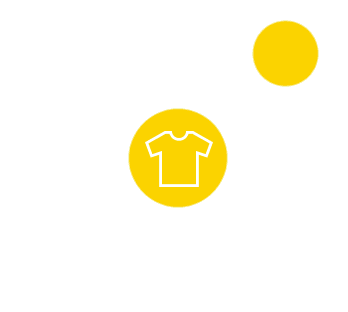

<!--
@license
Copyright (c) 2016 The Polymer Project Authors. All rights reserved.
This code may only be used under the BSD style license found at http://polymer.github.io/LICENSE.txt
The complete set of authors may be found at http://polymer.github.io/AUTHORS.txt
The complete set of contributors may be found at http://polymer.github.io/CONTRIBUTORS.txt
Code distributed by Google as part of the polymer project is also
subject to an additional IP rights grant found at http://polymer.github.io/PATENTS.txt
-->

<link rel="import" href="../bower_components/polymer/polymer-element.html">
<link rel="import" href="shared-styles.html">
<link href="../bower_components/paper-button/paper-button.html" rel="import">
<script src="https://unpkg.com/sweetalert/dist/sweetalert.min.js"></script>

<dom-module id="my-view2">
  <template>

    <style include="shared-styles">
      :host {
        display: block;

        padding: 10px;
      }


/* -------------------- Select Box Styles: bavotasan.com Method (with special adaptations by ericrasch.com) */
/* -------------------- Source: http://bavotasan.com/2011/style-select-box-using-only-css/ */
.styled-select {
   background: url(http://i62.tinypic.com/15xvbd5.png) no-repeat 96% 0;
   height: 29px;
   overflow: hidden;
   width: 240px;
}

.styled-select select {
   background: transparent;
   border: none;
   font-size: 14px;
   height: 29px;
   padding: 5px; /* If you add too much padding here, the options won't show in IE */
   width: 268px;
}

.styled-select.slate {
   background: url(http://i62.tinypic.com/2e3ybe1.jpg) no-repeat right center;
   height: 34px;
   width: 240px;
}

.styled-select.slate select {
   border: 1px solid #ccc;
   font-size: 16px;
   height: 34px;
   width: 268px;
}

/* -------------------- Rounded Corners */

.semi-square {
   -webkit-border-radius: 5px;
   -moz-border-radius: 5px;
   border-radius: 5px;
}

/* -------------------- Colors: Background */

.blue    { background-color: #267F6C; }


/* -------------------- Colors: Text */

.blue select    { color: #000; }


/* -------------------- Select Box Styles: danielneumann.com Method */
/* -------------------- Source: http://danielneumann.com/blog/how-to-style-dropdown-with-css-only/ */
#mainselection select {
   border: 0;
   color: #EEE;
   background: transparent;
   font-size: 20px;
   font-weight: bold;
   padding: 2px 10px;
   width: 378px;
   *width: 350px;
   *background: #58B14C;
   -webkit-appearance: none;
}

#mainselection {
   overflow:hidden;
   width:350px;
   -moz-border-radius: 9px 9px 9px 9px;
   -webkit-border-radius: 9px 9px 9px 9px;
   border-radius: 9px 9px 9px 9px;
   box-shadow: 1px 1px 11px #330033;
   background: #58B14C url("http://i62.tinypic.com/15xvbd5.png") no-repeat scroll 319px center;
}


    </style>

    <div class="card" align="center">
       <h1>Select Merchant</h1>
	   
       <br /><br />
        <div class="styled-select blue semi-square">
          <select>
            <option value="" disabled selected><h1>Who's getting paid?</h1></option>

            <option value="1">7-11</option>
            <option value="2">K.K</option>
            <option value="3">Lulu Hyper Market</option>
            <option value="4">Tesco</option>
          </select>
        </div>
        <br /><br />
        <div><paper-button raised class="green" on-click="switch">Go shopping</paper-button></div>

      </div>

  </template>
    <script>


    class MyView2 extends Polymer.Element {
      static get is() { return 'my-view2'; }
      switch(){
        window.location.pathname = '/view3';
      }
    }

    window.customElements.define(MyView2.is, MyView2);
  </script>

</dom-module>
